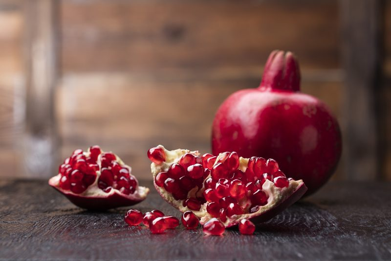
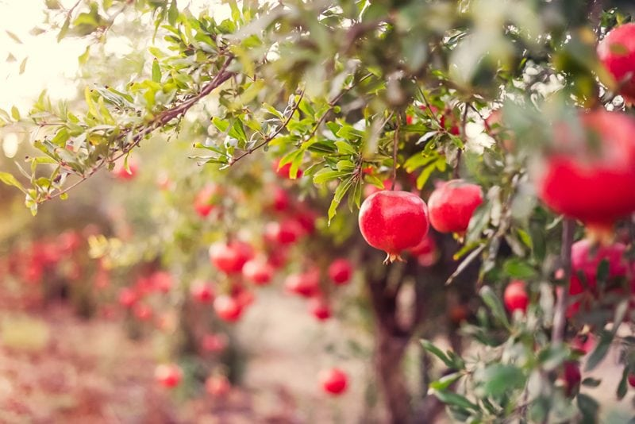

Pomegranates ( drought-tolerant)
If you haven’t tried pomegranates, now is the time. I wasn’t introduced to them until my late twenties and fear of the unknown kept me from ever buying them. Shame on me. I was missing out. Something I don’t want you to do… so please take my words as those of encouragement. :)

How Do They Grow?
First off, you will find pomegranates growing on a shrub or small tree which can reach between 20 or 30 feet in height. The trunk is covered by a red-brown bark which later becomes gray. The branches are stiff, angular, and often spiny. Pomegranate trees have been known to reach the age of 200! The vigor of a pomegranate declines after about 15 years, however.

The leaves are glossy, leathery, narrow, and lance-shaped and during the Spring they will be joined by attractive scarlet, white or variegated flowers. The flowers may be solitary or grouped in twos and threes at the ends of the branches. The pomegranate is self-pollinated as well as cross-pollinated by insects. Cross-pollination increases the fruit set.
Their outer skin is tough and leathery and isn’t meant to be eaten. The interior is separated by membranous walls and white, spongy, bitter tissue into compartments packed with sacs filled with sweetly acid, juicy, red, pink, or whitish pulp or aril. In each sac, there is one angular, soft, or hard seed. High temperatures are essential during the fruiting period to get the best flavor. The pomegranate may begin to bear in 1 year after planting out, but 2-1/2 to 3 years is more common. Under suitable conditions, the fruit should mature some 5 to 7 months after bloom.
How to Select a Pomegranate
When choosing a pomegranate, look at weight, not color. I have to admit, this is hard for me, as I always gravitate to the bright colored fruits. The outside of a ripe pomegranate can vary from light pink to a deep ruby-red, but that’s not what’s important; the heavier the fruit, the more juice it contains–which means it’s that much more delicious. Pomegranates stop ripening as soon as they are picked.
Look for ones that have smooth skin, free from any bruises, cuts or mold. Once you get them home, store them in a cool dark place at room temperature for 5-8 days or more. But not so dark that you forget about them. I have the “been-there-done-that” award in this category. You can also keep them inside the refrigerator for a couple of weeks.
For longer storage, you can de-seed and freeze the arils whole. Another option is to extract the juice by running the arils through a food strainer or a blender and straining out the seeds; the juice can be frozen for up to 6 months.
© AmieSue.com